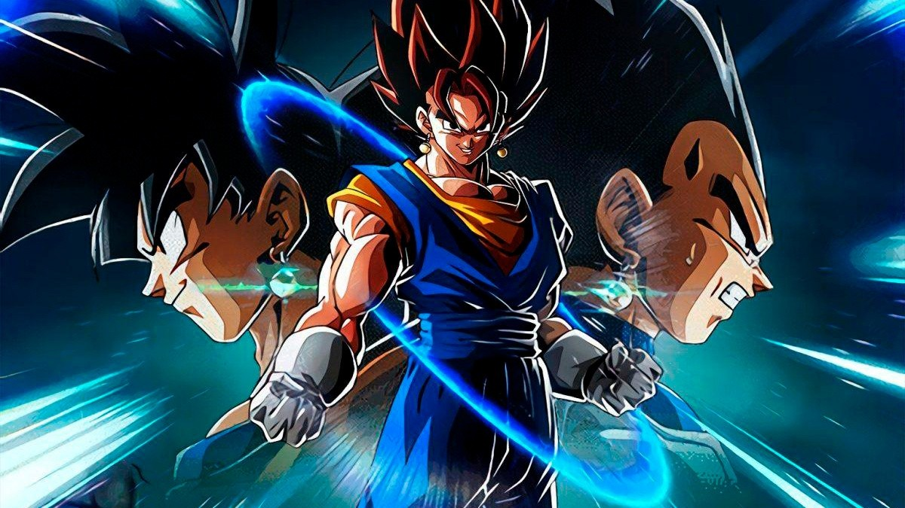
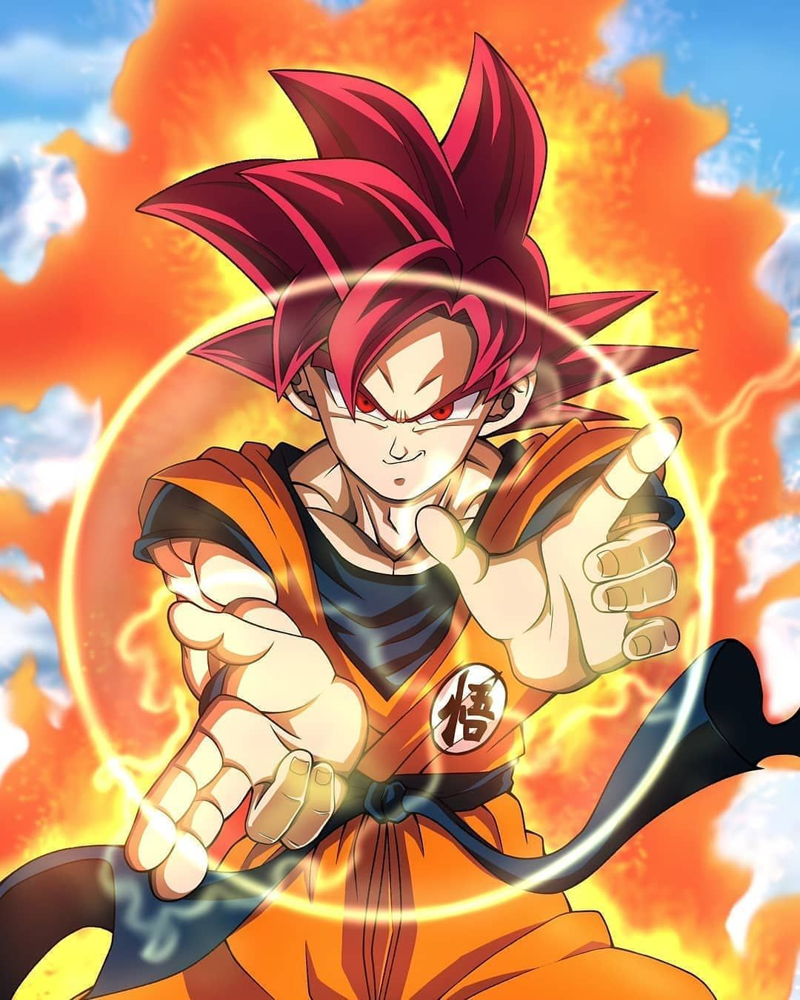

Mi serie favorita es Dragon ball
De acuerdo entonces
- Bola de dragon
- Dragon ball z
- Dragon ball super
- ¿Podría un humano volverse tan fuerte como un Super Saiyan si fuera inmortal y pudiera entrenar todo ese tiempo, o existen límites duros para su potencial en el universo DBZ?
- ¿Por qué los fanáticos de HxH intimidan a otros fanáticos del anime más que a otros?
- En la actualidad, ¿Hit es más fuerte que Vegeta?
- ¿Alguien puede ser demasiado viejo para ver Dragon Ball Z?
- ¿Quién fue el villano más desafiante en la historia de Dragon Ball: Frieza o Cell?
- La basura canónica que no se nombrara
Dragon Ball es el mejor con diferencia, tiene un gran ritmo, una gran mezcla de Comedia y Acción, una trama comprensible y un buen elenco de personajes.
Ahora Dragon Ball Z después de Dragon Ball porque era el siguiente, y era bueno. La animación era buena en ese momento, tenía algunas escenas de pelea muy icónicas, el ritmo podría ser mejor, y había un relleno que, como la mayoría de los rellenos, es bastante malo. Pero todavía supera a Dragon Ball Super como lo es ahora.
Super tuvo algunos problemas de animación menores, para empezar, junto con solo repetir las películas que eran mejores que el anime, y se sentó mal por lo vaga que era la animación al principio.

Pero a medida que avanzaba, mejoró junto con la animación, y como lo es ahora, es un anime muy capaz con algunas escenas de lucha y un reparto de personajes.
Ahora, la serie Dragon Ball que no se nombrará. Era MUY MALO, con una extraña trama, Goku as a Kid (nuevamente) lo cual era molesto. Parecía que intentaron hacerlo como la serie Original Dragon Ball, pero fallaron miserablemente. Un problema grave era cuán molesto es PAN. Pero tenía una calidad redentora, como SSJ4, que fue simplemente increíble y trajo Gogeta.
